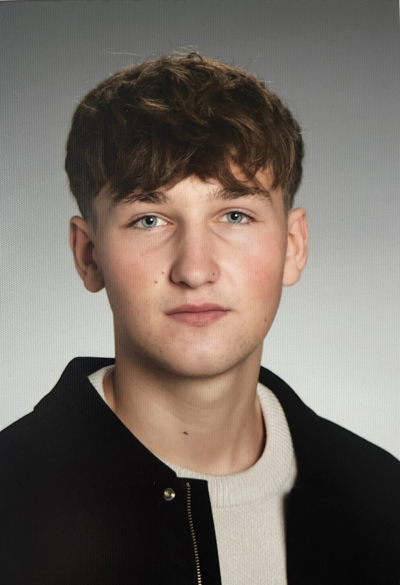

Kein klassischer Skill-Block, sondern eine klare Arbeitsprobe.
Diese Seite ist bewusst als Portfolio-Lebenslauf aufgebaut: weniger allgemeine Buzzwords, mehr konkrete Arbeiten, echte Produktionen und nachvollziehbare Praxisstationen.
Portfolio Lebenslauf
Ich arbeite an Projekten zwischen Stop Motion, Dokumentation, Sound Design, Pilotfilm und Installation. Mein Schwerpunkt liegt auf Arbeiten, in denen Bild, Ton und dramaturgische Wirkung präzise zusammenspielen.

Portfolio-Auszug mit ausgewählten Arbeiten aus Film, Ton und Projektpraxis.
Diese Seite ist bewusst als Portfolio-Lebenslauf aufgebaut: weniger allgemeine Buzzwords, mehr konkrete Arbeiten, echte Produktionen und nachvollziehbare Praxisstationen.
Sound Design und Audio für narrative Formate, Projektarbeit im Filmkontext, dokumentarische Stoffe, Pilotprojekte und visuelle Formate mit räumlicher Wirkung.
Ausgewählte Projekte
Die Auswahl bündelt deine aktuellen Arbeiten und ersetzt die früheren allgemeinen Berufsstationen durch konkrete Produktionen und Rollen.
Praxis
Die frühere Business-Schiene ist bewusst rausgenommen. Übrig bleiben die Stationen, die deinen filmischen und redaktionellen Weg tatsächlich stützen.
Ausbildung
Film & Multimediaart, voraussichtlicher Abschluss Juni 2026
Musikzweig als Grundlage für musikalisches Arbeiten, Rhythmus und klangliches Verständnis.
Kontakt
Wenn du ein Portfolio brauchst, das Projekte klar erzählt statt nur Stationen aufzulisten, ist diese Seite genau dafür gebaut.